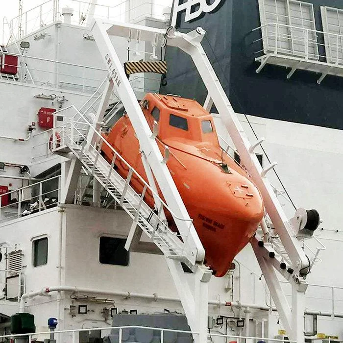

Botes salvavidas
Inspección de botes salvavidas, incluidos los modelos de caída libre.
Cotizar bote salvavidas

LSA · Life-Saving Appliances
Botes salvavidas, botes de rescate, pescantes y mecanismos de suelta en puertos brasileños.
SOLAS IMO MSC.402(96)
Seleccione el equipo para incluirlo en su solicitud.

Inspección de botes salvavidas, incluidos los modelos de caída libre.
Cotizar bote salvavidas
Inspección del bote y pruebas operacionales según el modelo y su instalación a bordo.
Cotizar bote de rescate
Verificación de los dispositivos de puesta a flote, chigres y ganchos de suelta aplicables.
Cotizar sistemas de puesta a floteEl equipo verifica los requisitos de SOLAS, de la Resolución IMO MSC.402(96) y del fabricante que se aplican a cada equipo.
Examen minucioso y pruebas operacionales de los equipos y sistemas aplicables a bordo.
Examen minucioso, pruebas operacionales con sobrecarga y revisión general de los mecanismos de suelta aplicables.


Incluya la balsa salvavidas en la misma solicitud para que el equipo confirme el servicio y la disponibilidad.
Incluir balsa en la cotizaciónNatal Safety presta servicios en puertos brasileños. Indique el puerto y, si la conoce, la ventana de escala para que el equipo confirme la disponibilidad.
El número IMO es opcional. Puede iniciar la solicitud con el nombre del buque o de la unidad y completar los datos más adelante.
El tipo y la cantidad de equipos, el fabricante, el modelo, la bandera, la sociedad de clasificación y la ventana de servicio ayudan a confirmar el alcance. Si dispone de ellos, tenga a mano el informe anterior y una foto de la placa del equipo.
Indique el fabricante y el modelo para que el equipo verifique las autorizaciones aplicables al equipo, la bandera y la sociedad de clasificación.